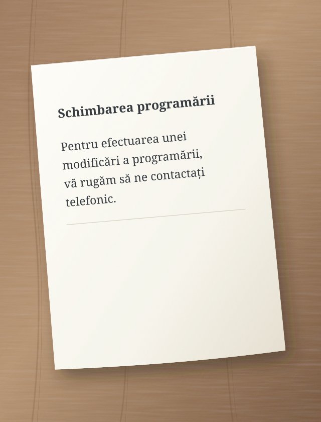
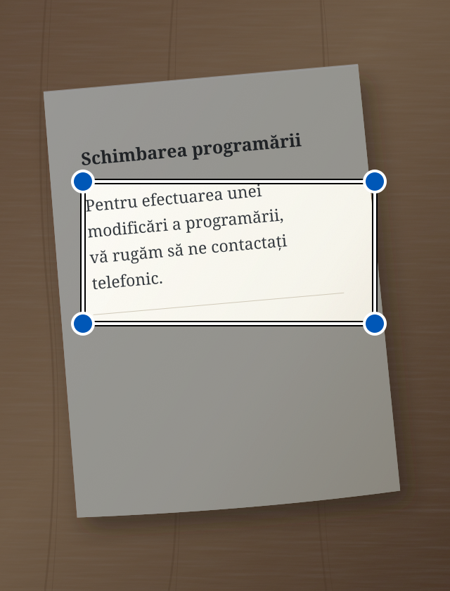

Mai puține cuvinte dificile. Mai multă înțelegere.
O scrisoare oficială, un mesaj lung, instrucțiuni complicate. Sedno te ajută să le înțelegi cu un limbaj mai simplu. Poate și să corecteze textul tău și să îl citească cu voce tare.
Pentru efectuarea unei modificări a programării, vă rugăm să ne contactați telefonic.
↳ Text simplificat
Vrei să schimbi programarea? Sună-ne.
Exemplu ilustrativ de simplificare.
Înțelegi mai ușor. Acționezi mai ușor.
Limbajul simplu este pentru toată lumea.
Creăm Sedno mai ales pentru persoanele cu dificultăți de auz și pentru cele care înțeleg greu textele complexe. Cuvintele mai simple ne pot ajuta pe toți.
De la cuvinte la sens
Doi pași simpli.
01
Adaugă text
Scrie, lipește, fă o fotografie sau vorbește.
02
Simplifică sau corectează
Alege ce ai nevoie. Rezultatul apare în același câmp. Îl poți edita în continuare.
i AI poate greși. Verifică informațiile importante în original.
Vezi unde să apeși
Sedno, pas cu pas.
Fiecare exemplu arată o acțiune. Cercul arată unde să apeși. Săgeata arată ce urmează.
Acestea sunt desene simplificate ale ecranelor. Textele sunt exemple. Aplicația poate arăta puțin diferit.
Simplifică textul scris
Ai un mesaj dificil? Scrie-l sau lipește-l în Sedno.
1 Scrie textul și apasă „Simplifică”.
Verifică dacă este ales modul Simplifică.
Sedno – simplifică textul:
Pentru efectuarea unei modificări a programării, vă rugăm să ne contactați telefonic.
Simplifică
2 Citește textul mai simplu.
Rezultatul apare în același câmp. Îl poți edita.
Text simplificat
Vrei să schimbi programarea? Sună-ne.
IA poate greși
Simplifică
Simplifică textul dintr-o fotografie
Ai o scrisoare pe hârtie? Fă o fotografie în Sedno.
1 Apasă camera.
Se deschide camera din aplicație.
Sedno – simplifică textul:
Scrie sau lipește un text
Simplifică
2 Apasă „Fă o fotografie”.
Ține telefonul astfel încât întreaga pagină și textul să fie clare.
Fotografiază un text

Fă o fotografie
3 Selectează textul și apasă „Simplifică”.
Mută colțurile cadrului în jurul textului pe care vrei să îl simplifici.
Selectează textul
Mută colțurile cadrului pentru a selecta textul.

Simplifică
4 Citește textul mai simplu.
Sedno citește textul din fotografie și îl simplifică.
Text simplificat
Vrei să schimbi programarea? Sună-ne.
IA poate greși
Simplifică
Fotografia rămâne pe telefon. Doar textul recunoscut este trimis la AI. Dacă simplificarea nu reușește, textul rămâne în câmp și îl poți edita.
Simplifică vorbirea
Preferi să vorbești în loc să scrii? Alege modul Simplifică.
1 Apasă microfonul.
Dacă telefonul cere acces la microfon, permite-l.
Sedno – simplifică textul:
Scrie sau lipește un text
Simplifică
2 Spune textul cu voce tare.
Vorbește în limba aleasă. Fă o scurtă pauză la final.
Vorbește în limba aleasă
Sedno transformă vorbirea în text.
3 Citește textul mai simplu.
După 1,5 secunde de liniște, Sedno simplifică automat textul recunoscut.
Text simplificat
Vrei să schimbi programarea? Sună-ne.
IA poate greși
Simplifică
Vorbirea este recunoscută pe telefon. Ai nevoie de Android 13 sau mai nou, de un dispozitiv compatibil și de un model descărcat pentru limba aleasă. Înregistrarea durează cel mult un minut. Stop anulează înregistrarea.
Corectează textul scris
Vrei să corectezi mesajul? Alege modul Corectează înainte de a scrie.
1 Scrie textul și apasă „Corectează”.
Schimbă modul cu săgețile de deasupra butonului mare.
Sedno – corectează textul:
maine nu pot venii la intalnire
Corectează
2 Citește textul corectat.
Sedno corectează greșelile. Verifică dacă textul spune ce vrei.
Text corectat
Mâine nu pot veni la întâlnire.
IA poate greși
Corectează
Ascultă textul corectat
În modul Corectează, telefonul poate citi cu voce tare textul din câmp.
1 Apasă difuzorul.
Mai întâi corectează textul. Apoi apasă difuzorul din stânga.
Text corectat
Mâine nu pot veni la întâlnire.
IA poate greși
Corectează
2 Ascultă textul.
Telefonul citește cu voce tare. Butonul stop oprește citirea.
Telefonul citește cu voce tare
Ascultă textul de pe telefon.
Citirea se face pe telefon. Descarcă o voce offline pentru limba aleasă din setările telefonului.
Limbă
Alege-ți limba.
Sedno acceptă 13 variante lingvistice. În aplicație, deschide meniul și alege Limbă. Alegerea se aplică și textului, dictării și citirii. Sedno simplifică și corectează; nu traduce între limbi.
Textele tale. Controlul tău.
Confidențialitate de la început.
Fotografiile și sunetul rămân pe telefon. Doar textul este trimis către IA.
Textul din fotografii este recunoscut pe dispozitiv. Fotografia nu este trimisă.
Sunetul rămâne la tine
Telefonul recunoaște vorbirea și citește textul local. Sedno nu trimite sunet la serverul său sau la OpenAI. Trimite doar textul recunoscut pentru simplificare.
AI procesează textul
Textul de simplificat sau corectat ajunge prin server la OpenAI. Serverul Sedno nu salvează conținutul.
Istoric timp de 7 zile
Istoricul criptat este salvat doar pe dispozitivul tău timp de 7 zile. Îl poți șterge mai devreme. Deconectarea șterge istoricul de pe telefon.
Sedno
Cuvinte mai aproape de oameni.
Aplicația este în faza de testare. Linkul de descărcare va apărea aici după lansare.